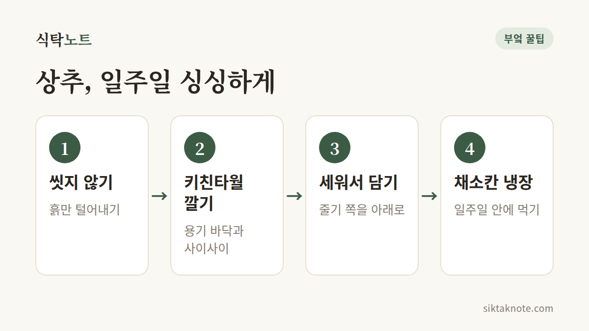

상추 오래 싱싱하게 보관하는 법 — 시든 상추 살리는 법까지

3줄 요약
- 상추는 씻지 말고 키친타월을 깔아 밀폐 용기에 줄기 쪽을 아래로 세워 냉장하세요.
- 이미 씻었다면 물기를 아주 꼼꼼히 털어 키친타월과 함께 보관하세요.
- 시든 상추는 찬물에 10~20분 담가두면 다시 팽팽해져요.

어떻게 해야 할까요
- 씻지 말고 보관: 겉에 물기가 있으면 잎이 금방 물러요. 흙이 묻었다면 마른 손으로 털어내는 정도로만 두세요.
- 포기째 사면 밑동을 그대로: 한 장씩 떼어 두기보다 밑동이 붙은 채로 보관하고, 쓸 때 필요한 만큼만 뜯으면 더 오래 가요.
- 키친타월을 깔고 담기: 밀폐 용기 바닥에 키친타월을 깔고 상추를 담은 뒤, 위에도 한 장 덮어주세요. 키친타월이 습기를 먹어줘요.
- 줄기 쪽을 아래로 세워서: 눕히면 잎이 눌려서 상해요. 가능하면 세워서 냉장고 채소칸에 넣으세요.
- 젖은 키친타월은 바로 갈아주기: 이틀에 한 번 정도 확인해서 축축하면 새것으로 바꿔주세요.
이미 씻은 상추라면
찬물에 흔들어 헹군 뒤 물기를 최대한 털어주세요. 채소 탈수기가 있으면 돌리고, 없다면 키친타월로 한 장씩 눌러 닦으세요. 그다음 키친타월을 깐 용기에 담아 냉장하고 2~3일 안에 드세요.
시든 상추 살리는 법
잎이 축 처졌지만 아직 변색되지 않았다면, 찬물이나 얼음물에 10~20분 담가두세요. 잎이 수분을 빨아들여 다시 팽팽해져요. 건진 뒤에는 물기를 꼼꼼히 털어주세요. 이미 누렇게 변했거나 미끈거리는 잎에는 소용이 없어요.
왜 그런지
상추는 수분이 많고 잎이 얇아서 물이 닿거나 공기 중에 두면 금방 상하거나 시들어요. 또 상추는 과일이 익을 때 나오는 에틸렌 가스에 약해서, 사과·바나나·토마토 옆에 두면 갈색 반점이 생길 수 있어요. 에틸렌에 대해서는 바나나 오래 두고 먹는 법에서 더 볼 수 있어요.
주의할 점
- 상추는 냉동하지 마세요. 해동하면 물처럼 흐물흐물해져요.
- 잎이 미끈거리거나 가장자리가 녹아내리고 시큼한 냄새가 나면 버리세요.
- 먹기 직전에 한 장씩 흐르는 물에 씻어 드세요.
상추는 "씻지 않고, 세워서, 키친타월과 함께"만 기억하세요.